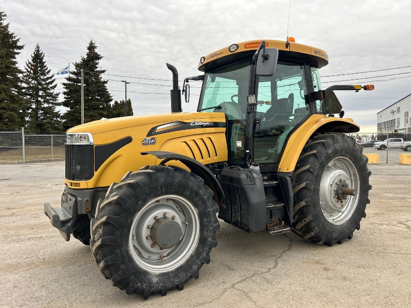

Challenger MT545B

Caterpillar Challenger MT545B – це універсальний колісний трактор середньої потужності, який поєднує в собі витривалість спецтехніки Caterpillar та агротехнології корпорації AGCO. Завдяки високому крутному моменту та надійній паливній системі, цей трактор ефективний як на польових роботах (посів, культивація), так і на транспортних операціях.
Модель вирізняється високим рівнем технологічності для свого класу. Вона комплектується роботизованою трансмісією AutoDrive (або Techstar CVT у деяких модифікаціях), що забезпечує плавне перемикання передач та оптимальний підбір швидкості. Простора кабіна з ергономічним підлокітником та відмінною шумоізоляцією створює комфортні умови для оператора, а потужна гідросистема дозволяє працювати з сучасним навісним обладнанням. Цей трактор цінується за міцність конструкції та здатність стабільно працювати в інтенсивному режимі.
| Параметр | Значення |
|---|---|
| Клас тяги | 3.0 |
| Тип ходової частини | колісний |
| Колісна формула | 4х4 |
| Тип рами | жорстка конструкція з посиленням |
| Основне призначення | важкі польові роботи, глибоке розпушування, швидкісна сівба, робота з активними знаряддями |
| Параметр | Значення |
|---|---|
| Модель | Caterpillar C6.6 ACERT |
| Тип двигуна | 6-циліндровий, дизельний, Common Rail, з турбонаддувом VGT та інтеркулером |
| Спосіб охолодження | рідинне |
| Розташування циліндрів | рядне, вертикальне |
| Робочий об’єм | 6,6 л (6600 см³) |
| Номінальна потужність | 110,0 кВт (150,0 к.с.) |
| Максимальна потужність | 118,0 кВт (160,0 к.с.) |
| Максимальний крутний момент | 645 Н·м (при 1400 об/хв) |
| Номінальні оберти | 2200 об/хв |
| Очищення вихлопних газів | Tier 3 (для версії B/C) / Tier 4i (на пізніх моделях) |
| Питома витрата (оптимальна) | 198 г/кВт·год |
| Параметр | Значення |
|---|---|
| Тип КПП | безступінчаста гідромеханічна (TechStar CVT) |
| Управління | Power Shuttle (електрогідравлічне), педальний або важільний режими |
| Діапазон швидкості вперед | 0,03 – 40,0 (опція 50,0) км/год |
| Діапазон швидкості назад | 0,03 – 38,0 км/год |
| Тип зчеплення | мокре багатодискове, з гідравлічним керуванням |
| Вал відбору потужності (ВВП) | 540 / 540E / 1000 / 1000E об/хв |
| Параметр | Значення |
|---|---|
| Тип коліс | пневматичні шини |
| Шини передні (стандарт) | 540/65 R28 |
| Шини задні (стандарт) | 650/65 R38 |
| Радіус ведучого колеса (заднього) | 0,885 м (Rw) |
| Колія передніх коліс | 1650 – 2200 мм |
| Колія задніх коліс | 1700 – 2300 мм |
| Кліренс (дорожній просвіт) | 505 мм |
| Блокування диференціалу | електрогідравлічне, автоматичне (ASM) |
| Режим роботи | Витрата, л/год |
|---|---|
| Важкі польові роботи (оранка 5-корпусним плугом, глибоке розпушування) | 28,5 – 33,8 л/год |
| Середні польові роботи (робота з посівним комплексом, дисковка) | 18,5 – 22,5 л/год |
| Легкі роботи (культивація, міжрядний обробіток) | 12,0 – 15,5 л/год |
| Транспортні роботи (магістральні переїзди зі швидкістю 40-50 км/год) | 14,0 – 19,0 л/год |
| Холостий хід (зупинки, робота гідравліки на місці) | 1,8 – 2,4 л/год |
| Параметр | Значення |
|---|---|
| Експлуатаційна (робоча) вага | 6350 кг (без баласту) |
| Максимально допустима вага | 9250 кг |
| Довжина / Ширина / Висота | 4950 / 2550 / 3050 мм |
| Колісна база | 2780 мм |
| Об’єм паливного баку | 240 л |
| Параметр | Значення |
|---|---|
| Гідравлічна система | Load Sensing (закритий центр), 110 л/хв |
| Вантажопідйомність навіски | 7800 кг |
| Максимальний тиск гідросистеми | 20,0 МПа |
| Радіус розвороту | 5,1 м |
| Особливості | Трансмісія TechStar CVT (аналог Fendt Vario) дозволяє двигуну працювати на постійних обертах максимальної ефективності, регулюючи швидкість виключно гідрооб'ємним модулем. Це усуває розриви тяги та мінімізує буксування. |
| Чинник | Опис |
|---|---|
| Інтелектуальне управління CVT (Трансмісія TechStar) | Система автоматично регулює передавальне число так, щоб двигун працював на обертах максимального крутного моменту (645 Н·м) при мінімально можливій подачі палива. Це усуває людський фактор при виборі передачі. |
| Двигун ACERT Technology | Система Caterpillar ACERT використовує багатофазне впорскування та вдосконалене управління повітряним потоком. Це забезпечує ефективне згоряння палива навіть при різкій зміні тягового опору, не допускаючи надмірного димлення та перевитрати. |
| Система TMS (Tractor Management System) | Електроніка синхронізує роботу двигуна і трансмісії. Коли навантаження зменшується (наприклад, на розворотах або легких ділянках поля), TMS миттєво знижує оберти двигуна до мінімально необхідних для підтримки заданої швидкості. |
| Гідросистема Load Sensing | Насос подає рівно стільки масла, скільки потрібно в даний момент. При транспортних роботах, де гідравліка не задіяна, паразитичне навантаження на двигун зводиться до нуля, що економить до 1,5 л/год. |